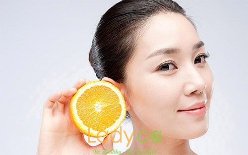
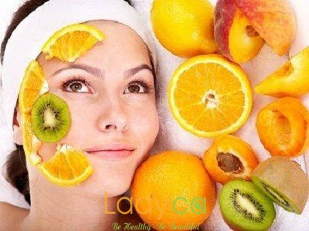

SERUM VITAMIN C TRỊ THÂM LÀ GÌ?
Da bị mụn là một trong những nguyên nhân chính khiến tình trạng thâm da trở lên tồi tệ, thậm chí da có thể bị sưng tấy, nhiễm trùng. Trên thị trường công nghệ làm đẹp có nhiều cách trị thâm như: laser, lăn kim, lột da với acid, dùng vitamin C… Cơ bản thì những cách này sẽ giúp bạn thay da, kích thích phát triển lớp da mới xịn hơn, khỏe hơn, đẹp hơn, làm trẻ hóa da.
Da bị mụn là một trong những nguyên nhân chính khiến tình trạng thâm da trở lên tồi tệ, thậm chí da có thể bị sưng tấy, nhiễm trùng. Trên thị trường công nghệ làm đẹp có nhiều cách trị thâm như: laser, lăn kim, lột da với acid, dùng vitamin C… Cơ bản thì những cách này sẽ giúp bạn thay da, kích thích phát triển lớp da mới xịn hơn, khỏe hơn, đẹp hơn, làm trẻ hóa da.

SERUM VITAMIN C TRỊ THÂM
Trong đó phương pháp nhẹ nhàng đơn giản nhất và cũng tiết kiệm nhất để trị thâm da là sử dụng serum Vitamin C.
Vì sao nên lựa chọn sản phẩm Vitamin C trị thâm dạng Serum?

Serum đem lại hiệu quả nhanh
Trên thị trường hiện nay, có cả tá công ty với hàng trăm sản phẩm chứa Vitamin C từ dạng uống đến dạng bôi cho bạn lựa chọn. Trong việc làm đẹp thì chị em phụ nữ chủ yếu dùng để bôi ngoài da và phổ biến nhất là dạng Serum (huyết thanh) và dạng Cream (kem).
Trong đó dạng Serum được khuyến khích sử dụng và ưa chuộng nhất bởi sản phẩm tập trung vào Vitamin C ở nồng độ cao, thường không có quá nhiều thành phần khác. Trong khí đó vitamin dạng kem thường chứa nồng độ thấp hoặc không đủ định lượng yêu cầu để hoạt động hiệu quả, dễ bị ảnh hưởng bởi nồng độ, độ nhớt…
Điều này giúp Serum đem lại hiệu quả nhanh, da dễ hấp thụ và Vitamin C cũng ổn định, ít bị biến đổi. Serum cũng là dạng sản phẩm chứa Vitamin C hoạt động ở điều kiện tốt nhất – gần như không màu. Vì thế, chúng giúp bạn nhanh chóng trẻ hóa làn da và giảm các vết thâm trên da.
Trong đó dạng Serum được khuyến khích sử dụng và ưa chuộng nhất bởi sản phẩm tập trung vào Vitamin C ở nồng độ cao, thường không có quá nhiều thành phần khác. Trong khí đó vitamin dạng kem thường chứa nồng độ thấp hoặc không đủ định lượng yêu cầu để hoạt động hiệu quả, dễ bị ảnh hưởng bởi nồng độ, độ nhớt…
Điều này giúp Serum đem lại hiệu quả nhanh, da dễ hấp thụ và Vitamin C cũng ổn định, ít bị biến đổi. Serum cũng là dạng sản phẩm chứa Vitamin C hoạt động ở điều kiện tốt nhất – gần như không màu. Vì thế, chúng giúp bạn nhanh chóng trẻ hóa làn da và giảm các vết thâm trên da.